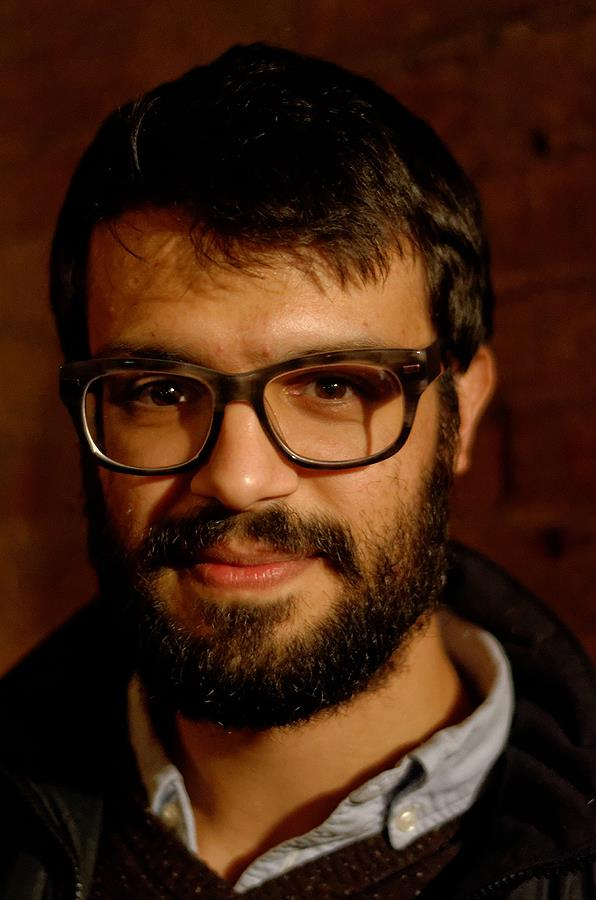

Esteban Buz
Post-doctoral Fellow/Lecturer
Department of Psychology and Program in Linguistics
Princeton University
e-mail: esteban.buz
book a meeting
Research interest
I work on understanding how and why speakers vary their speech.
I am interested in what extent speech production variability is a result of the constraints speakers face in planning what to say while also achieving their communicative goals. My more recent work focuses on if and how speech variation is attributable to task-relevant learning and adaptation during communication.
Autobiography
I'm from Los Angeles, California.
I graduated from the Johns Hopkins University in 2008 with a BA in Cognitive Science and a minor in Computer Science.
I worked on a fun project with Robert Frank on learning of multiple independent hierarchical transformations of linear sequences.
After, I worked in the Cognitive Neurology/Neuropsychology lab with Kerry Ledoux on finding implicit measures of verbal comprehension in non-verbal autistic children/adults.
I earned a PhD in Brain and Cognitive Sciences at the University of Rochester, working primarily with Florian Jaeger and partly with Michael Tanenhaus.
Education
- PhD, 2016, University of Rochester, Brain and Cognitive Sciences
- MA, 2013, University of Rochester, Brain and Cognitive Sciences
- BA, 2008, Johns Hopkins University, Cognitive Science (minor in Computer Science) with general and departmental honors
Honors, fellowships and funding
- 2015-2016 Ruth L. Kirschstein National Research Service Award Individual Predoctoral Fellowship to Promote Diversity in Health-Related Research (F31HD083020)
- 2015 Edward Peck Curtis Award for Excellence in Teaching by a Graduate Student
- 2014 27th Annual CUNY Conference on Human Sentence Processing Travel Award
- 2011, 2012 NSF Graduate Fellowship Honorable Mention
- 2010 Provost Fellowship, University of Rochester
- 2004-2008 Hodson Trust Scholarship, Johns Hopkins University
- 2004 Eagle Scout, Troop 188, Verdugo Hills Council
Various outputs
Publications
- Seyfarth, S., Buz, E., & Jaeger, T.F. 2016. Dynamic hyperarticulation of coda voicing contrasts. Journal of the Acoustical Society of America. doi: 10.1121/1.4942544
- Buz, E., Tanenhaus, M.K., & Jaeger, T.F. 2016. Dynamically adapted context-specific hyper-articulation: Feedback from interlocutors affects speakers' subsequent pronunciations. Journal of Memory and Language. doi: 10.1016/j.jml.2015.12.009
- Buz, E., & Jaeger, T.F. 2016. The (in)dependence of articulation and lexical planning during isolated word production. Language, Cognition and Neuroscience. doi: 10.1080/23273798.2015.1105984
- Jaeger, T.F., & Buz, E. 2016. Signal reduction and linguistic encoding. To appear in E. M. Fernández & H. S. Cairns (Eds.), Handbook of Psycholinguistics. Wiley-Blackwell. accepted draft
- Ledoux, K., Coderre, E., Bosley, L., Buz, E., Gangopadhyay, I., & Gordon, B. 2015. The concurrent use of three implicit measures (eye movements, pupillometry, and event-related potentials) to assess receptive vocabulary knowledge in normal adults. Behavior Research Methods. doi: 10.3758/s13428-015-0571-6
- Buz, E., Jaeger, T.F., & Tanenhaus, M.K. 2014. Contextual confusability leads to targeted hyperarticulation. To the 36th Annual Meeting of the Cognitive Science Society. Austin, TX: Cognitive Science Society. accepted draft pdf
- Buz, E. & Frank, R. 2008. Evaluating systematicity in neural networks through transformation combination. In Proceedings of the 30th Annual Meeting of the Cognitive Science Society. Austin, TX: Cognitive Science Society. pdf
Conference abstracts/posters
- Buz, E. & Jaeger, T.F. 2014. Effects of contextual confusability and interlocutor feedback on speaker phonetic production and production ease in a simulated-communication task. Poster at the 8th International Workshop on Language Production, Geneva, SW. abstract
- Buz, E. & Jaeger, T.F. 2014. Effects of interlocutor feedback on speaker phonetic production in a simulated-communication task. Poster at the 27th Annual CUNY Conference on Human Sentence Processing, Columbus, OH. abstract poster
- Buz, E. & Jaeger, T.F. 2013. Comparing measure of word confusability and their effect on speech production. Poster at the 26th Annual CUNY Conference on Human Sentence Processing, Columbia, SC. abstract poster
- Buz, E., Farmer, T., & Jaeger, T.F. 2012. Speakers are sensitive to prediction mismatches between two cues to grammatical category in spontaneous speech. Poster at the 7th International Workshop on Language Production, New York, NY. abstract poster
- Buz, E., & Jaeger, T.F. 2012. Word confusability and word durations. Poster at the 7th International Workshop on Language Production, New York, NY. abstract poster
- Buz, E., & Jaeger, T.F. 2012. Effects of phonological confusability on speech duration. Poster at the 25th Annual CUNY Conference on Human Sentence Processing, New York, NY. abstract poster
- Van Droof L.V., Ledoux K., Pickett E.J., Buz E., Billings N.M., & Gordon B. 2010. Advancing the measurement of receptive language in nonverbal individuals with autism. Poster at the 2010 International Meeting for Autism Research, Philadelphia, PA, May 20-22, 2010.
- Ledoux K., Pickett E., Van Droof L.V., Buz E., Billings N.M., & Gordon B. 2010. Receptive vocabulary knowledge in individuals with autism as assessed by eye movements, pupillary dilation, and event-related potentials. Poster at the 2010 Neurobiology of Autism conference, San Diego, CA, November 12, 2010.
- Ledoux, K., Pickett, E., Van Droof, L.V., Buz, E., Billings, N.M., & Gordon, B. 2009. Receptive vocabulary knowledge in individuals with autism as assessed by eye movements, pupillary dilation, and event-related potentials. Poster at the 2009 meeting of the Psychonomic Society, Boston, MA, November 21, 2009.
Code
These hold various coding projects, though most are currently private.
My bitbucket repos
My github repos
Teaching
Instruction
- Situated Language Usage (PU, LIN/PSY/CGS 408; Fall, 2016)
- Language & Psycholinguistics (U of R, BCS 152; Fall, 2014 & 2015), co-taught by myself and Florian Jaeger
- Independent study reading group (U of R, BCS 391; Spring, 2012), co-lead with Jenny Roche. Direct readings and discussions on the topics of speech production, audience design, and speaker-listener interaction.
Teaching Assistantships